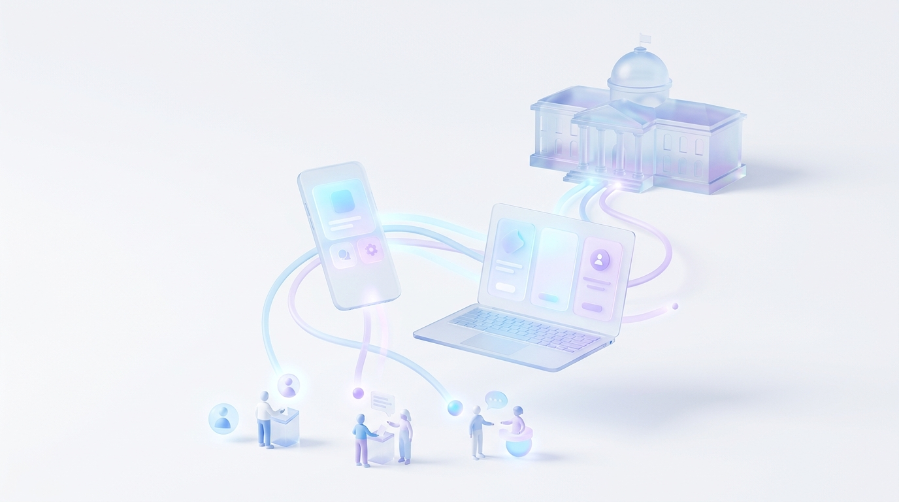

Tema 06
Uso da tecnologia na participação política
Utilizar plataformas digitais e aplicativos para aproximar os cidadãos dos representantes políticos e facilitar o acesso às informações públicas.

A política na palma da mão
Hoje é possível acompanhar votações, enviar sugestões e fiscalizar gastos públicos usando apenas um celular. A tecnologia reduz distâncias e facilita a participação de quem não pode ir a reuniões presenciais.
Ferramentas que você já pode usar
- e-Título — versão digital do título de eleitor, com local de votação e outras informações.
- Pardal — aplicativo da Justiça Eleitoral para denunciar irregularidades em campanhas.
- e-Democracia — portal da Câmara dos Deputados para participar de debates e audiências interativas.
- e-Cidadania — portal do Senado onde é possível opinar sobre projetos e sugerir ideias de lei.
- Fala.BR — plataforma para enviar pedidos de informação, reclamações e sugestões ao governo federal.
Tecnologia precisa incluir
Nem todos têm acesso à internet de qualidade ou sabem usar aplicativos. Por isso, a participação digital deve ser um complemento — e não substituir — os canais presenciais. Também é essencial investir em inclusão digital.
Como colocar em prática
- Criar aplicativos simples, acessíveis e gratuitos.
- Oferecer pontos públicos de acesso à internet.
- Promover oficinas de inclusão digital.
- Proteger os dados pessoais dos participantes.